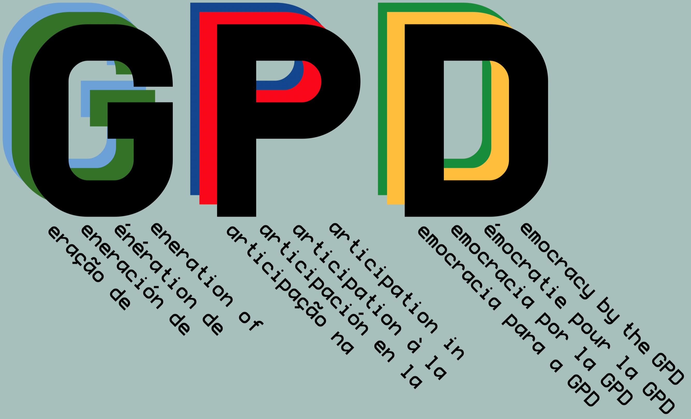

The Generation of Participation in Democracy
A Sustainable Operating System for the Americas
Democratic participation depends on a healthy and informed electorate. The Generation of Participation in Democracy (GPD) in the Americas is an innovation accelerator designed to multiply diverse efforts to promote sustainability in all its forms, as outlined in the United Nations Sustainable Development Goals. More sustainable social and economic institutions better provide the bare essentials of food, water, and shelter, to enable informed democratic participation.
Indigenous Public Health and Instituto Dourados
One primary goal of the GPD is to better secure Indigenous peoples who have inhabited the Americas for tens of thousands of years. Our Instituto Dourados is currently our flagship program innovating new systems to promote Indigenous public health, working with Brazilian colleagues fusing international collaboration, social science and epidemiology, and expanding access through multilingual publishing of project results.
Educational Initiatives & Security
We develop new educational initiatives to meet the needs of modern students across the Americas, focusing on all levels of capacity, neurodivergence, and need.
Beyond pedagogy, we facilitate technologies and practices for securing children online. Our privacy-by-default systems provide distributed social and geospatial visualization and analysis.
By treating client servers as edge devices, our solutions engineers work with school districts and similar institutions to help them crunch data locally so sensitive data is never transmitted outside the district, but they still can leverage cloud-based infrastructure to visualize, analyze, and act on real-time network security observations.
Innovation Through Recursive Intellience
The GPD is a recursive acronym: we are an organization supporting a new cultural generation of participation in democracy, with the goal of expanded creative generation of ever greater democratic participation.
Across the Americas, we have much to learn from each other on how to promote democratic participation, which provides the foundation for a more peaceful and joyous coexistence.
We are also at the dawn of a new social science. Theoretical development requires a rigorous analysis of real-world friction between models and actual behavior. Computational models now predict social dynamics with precision, given some basic assumptions.
While social science has been weaponized as a “dark-money” tool to suppress participation, the GPD inverts this advantage. We recursively apply insights of social and cognitive science and cultural evolution to amplify participatory governance.
The GPD is designed as an institutional battering ram against anti-democratic forces, securing the system against future anti-participatory insurrections.

Founder’s Statement
As a computational social scientist, I founded the GPD to serve as more than a passive non-profit research institute. Instead, it is a functional operating system for sustainable futures. It is my limited attempt at building an institution that supports the Sustainability VIBE I advocate, following the UN Sustainable Development Goals. Through GPD Américas and my intelligence and education company, SubtleTea Solutions, I am developing computational and scientific tools to create sustainable futures for all Americans, Southern, Central, and Northern, participando juntos.

In solidarity and service to a more participatory future,

Matt Turner, PhD
Founder & Architect, GPD Américas